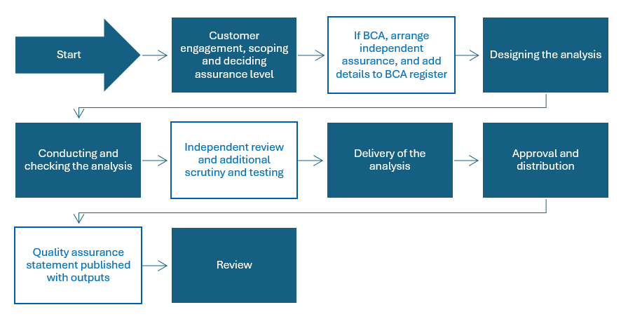

Introduction
Business-critical analysis represents analytical activity where a material error could directly influence major policy, funding, statutory, regulatory or customer-impacting decisions, or result in significant consequences for NHSBSA, customers, partners or the public. It requires enhanced governance, documentation and independent assurance arrangements.
Assurance helps establish whether the analysis is fit for purpose and whether sufficient confidence can be placed in the evidence, methods, assumptions and conclusions.
Use this Section to determine whether the analysis is business-critical, and if so, what steps to take to ensure it complies with the BCA assurance level
Concepts and definitions
Our current Business Critical analyses are published here.
Deciding whether the analysis is business-critical
It is the responsibility of the commissioner to determine whether the analysis is business critical.
When the scope has been completed, use the impact assessment in the Analytical Assurance Decision Tool to determine whether it meets the criteria for business-critical. The impact is assessed on a scale of 1 (low) to 4 (very high). Business Critical is defined by a level 4 score in any of these dimensions:
The extent to which the analysis influences decisions, actions, services or outcomes
The potential effect on expenditure, funding, resource allocation or financial performance
The potential effect on customer rights, entitlements, access, experience or outcomes
The potential effect on confidence in NHSBSA, its services or its analytical capability
The potential for regulatory breaches, legal challenge or non-compliance with statutory requirements
The extent to which the analysis is subject to external use, publication or public scrutiny
If the risk is scored as a four for at least one of the impact dimensions in the analytical risk assessment, then the analysis is designated as business-critical and the highest level of assurance is required. Publication status, Board consideration, Official Statistics designation, media interest, national visibility, FOI disclosure, ministerial interest or parliamentary scrutiny do not by themselves justify a Level 4 score.
The likelihood of an error does not change the business-critical classification.
What to do if the analysis is business-critical
The flowchart shows the additional steps to take if the analysis is business-critical.

If the analysis meets the criteria for business critical, the following actions should be completed:
At the start of the analysis
Complete the impact assessment in the Analytical Assurance Decision Tool
The commissioner should log the analysis on the NHSBSA Business Critical Analysis Register
Name the Analysis Senior Responsible Officer. This person may also be the commissioner
Arrange a suitable independent assurer to provide additional scrutiny, challenge and testing
Ensure that everyone delivering and assuring the work has the skills and knowledge for it
During analysis
Log all data, analytical risks and assumptions in the BCA appraisal document
Use the Analytical Quality and Assurance Checklist for Building Analytical Solution template to ensure that your analysis meets the requirements for business-critical assurance
Business critical analysis must be supported by sufficient documentation to demonstrate governance, methods, assumptions, quality assurance activities and decision-making
Complete all the BCA documentation: scope, specification, user guide, technical guide Data & AI-Analytical Quality and Assurance - Analytical Quality Assurance Templates - All Documents
Complete and deliver the Analysis Plan, and the Quality Assurance Plan plan
Refer to the Section about uncertainty to ensure you have considered and communicated uncertainty
Delivery, approval and sign-off
The Lead Assurer must review all documentation and score the analysis using the BCA appraisal document, and complete the assurance report in the same document
The Analysis Senior Responsible Officer must complete the Approval Statement in the BCA appraisal document and sign-off the analysis when it is fit for purpose
Any assumptions, limitations, uncertainties and residual risks must be documented and communicated to those commissioning, approving, interpreting or using the analysis
The commissioner must update the NHSBSA Business Critical Analysis Register when the work is signed-off
The Analysis Senior Responsible Officer must set a review date with the commissioner. This should be at least annually
A copy of the completed BCA appraisal document must be saved in Analytical Quality and Assurance SharePoint directory Completed BCA appraisal documents